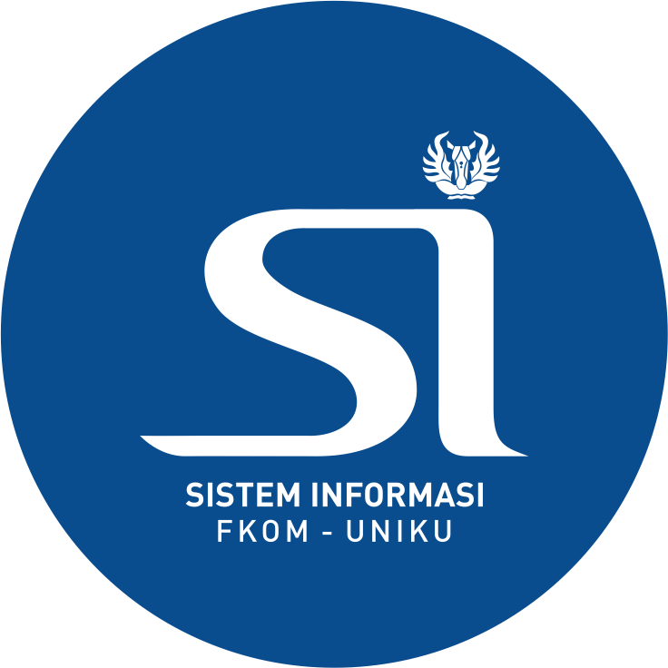
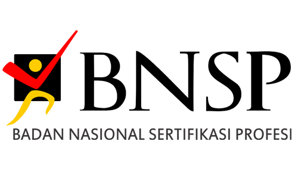
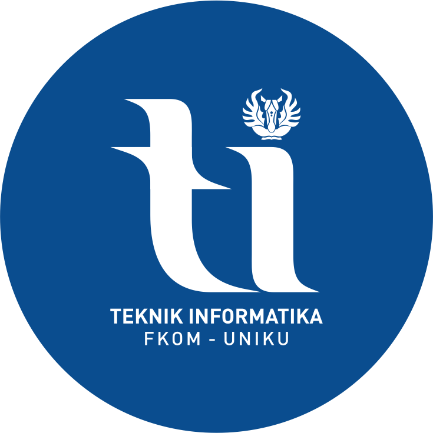
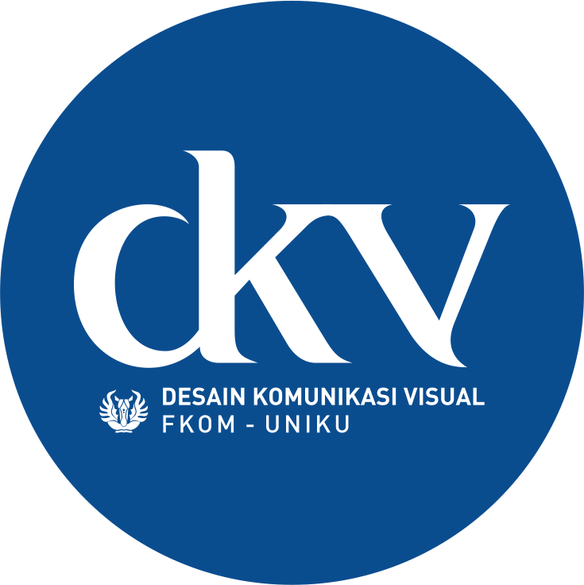
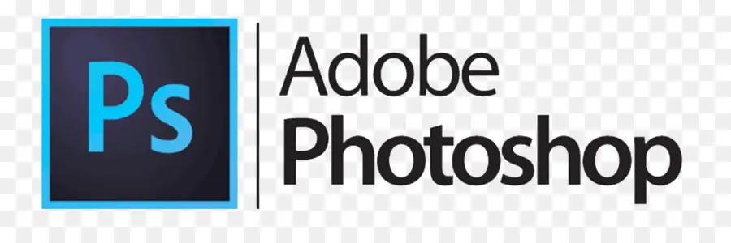
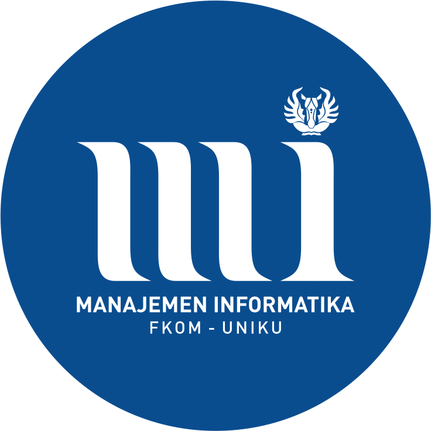
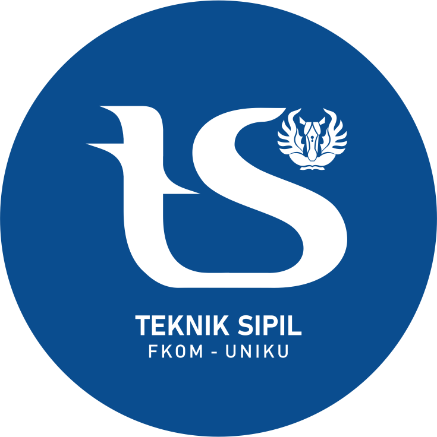

Profile Program Studi
1. Sistem Informasi

VISI
Terwujudnya Program Studi Sistem Informasi sebagai program studi yang handal dan unggul dalam penyelenggaraan Tri Darma Perguruan Tinggi, unggul di bidang rekayasa sistem informasi di Wilayah Jawa Barat pada tahun 2032.
PROFIL LULUSAN & PILIHAN KARIR
System Analyst, Data Analyst, Chief Information Officer (CIO), Software Quality Assurance.
KEGIATAN MBKM
- Magang
- Studi Independen
- Bangkit Academy
- Pertukaran Mahasiswa Merdeka (PMM) Nusantara
- International Credit Transfer (ICT)
PROGRAM UNGGULAN
- Pertukaran Mahasiswa ke University Utara Malaysia (UUM)
- Praktisi/Dosen Kompetensi dari Universitas lain
PRESTASI MAHASISWA
- Juara 1 lomba Desain Cindramata 2018
- Juara Favorit lomba poster STIKKU 2017
- Mahasiswa Berprestasi UNIKU 2022
- Duta Putra Sosial Kuningan 2022
- Juara Lomba LLDIKTI Konsep Garapan Terbaik Tingkat Jabar-Banten2022
- PPK Ormawa
SERTIFIKASI
 
2. Teknik Informatika

VISI
Terwujudnya Program Studi Teknik Informatika sebagai program studi yang handal dan unggul di bidang informatika khususnya bidang Rekayasa Perangkat Lunak, dan Pengolahan Citra dan memiliki komitmen tinggi dalam Pemberdayaan Masyarakat pada tahun 2032.
PROFIL LULUSAN & PILIHAN KARIR
Software Developer, Game Developer, Software Quality Assurance, Software Consultant, Technopreneur, dll.
KEGIATAN MBKM
- Kampus Mengajar
- Magang
- Studi Independen
- Bangkit Academy dengan Dicoding
- Pertukaran Mahasiswa Merdeka (PMM) Nusantara
- Virtual Mobility dengan University Utara Malaysia (UUM)
- Student Exchange dengan UUM
PRESTASI MAHASISWA
- Juara 3 lomba Game tingkat Nasional di Gameloft 2019
- Juara 3 lomba Game tingkat Nasional di Gameloft 2020
- Juara 1 lomba Game tingkat Nasional di Gameloft 2019
- Pilmapres tingkat Provinsi tahun 2018
- Juara 3 Pilmapres tingkat Universitas tahun 2019, 2020, 2021
- Finalis LIDM tahun 2021
- Juara 1 dan 3 lomba E-Sport Djarum tahun 2022
- PHP2D tahun 2020, 2021
- PPK Ormawa 2022
- PkM tahun 2020, 2021
- IWDM tahun 2022
SERTIFIKASI
3. Desain Komunikasi Visual

VISI
Menjadi Program Studi DKV yang menghasilkan creativepreneur dengan keunggulan lulusan yang berkomitmen pada pemberdayaan Masyarakat (kewirausahaan) yang berbasis pada budaya lokal dan mumpuni dalam Information and Communication Technology (ICT), serta memiliki sikap kreatif dan mandiri.
PROFIL LULUSAN & PILIHAN KARIR
Graphic Designer, Illustator, Coloring Artist, Comic Artist, Animator, Videographer, Artpreneur, Creative Director, Art Director, Video Editor, Post-Production Specialist, Photographer, Content Creator, Design Consultant, Entrepreneur, Social Media Specialist.
KEGIATAN MBKM
- Magang
- Studi Independen Bersertifikat
- Kegiatan Berwirausaha Mahasiswa Indonesia
PRESTASI MAHASISWA
- Juara 3 Festival Film Mahasiswa Indonesia (FFMI) 2020
- Juara 3 Battle of Learning Art 2020
- Juara 1 lomba poster Earth Hour Day 2021
- 10 besar Indonesian Film Festival (IFF) Australia 2021
- 2 Star Fish Award-International Ocean Art Festival, Korea Selatan 2021
- Juara 1, 2, & 3 Lomba Foto Essay CIFEST 2022
- Juara 1, 2, & 3 Lomba Video Kreatif CIFEST 2022
- Juara 1 Movie Feast International Short Movie Competition, Malaysia 2022
- Juara 3 Duta GenRe Putra Tk. Kabupaten Kuningan 2022
- Finalis Lomba Animasi pada Gemastik 2023
- Merit Award - International Ocean Art Festival, Korea Selatan 2023
SERTIFIKASI

4. Manajemen Informatika

VISI
Mewujudkan program studi yang unggul dalam bidang teknologi informasi dan komunikasi dan bermutu berbasis entrepeunership yang diseleraskan dengan perkembangan teknologi informasi dan komunikasi serta memiliki komitmen yang tinggi terhadap pemberdayaan masyarakat pada tahun 2032.
PROFIL LULUSAN & PILIHAN KARIR
Staff IT, Customer Service Representative, IT Consultant, IT Operator, Staff Finance, Financial Manager, Storage Manager, Administrator, dsb.
KEGIATAN MBKM
Magang Bersertifikat
Keahlian Spesialis
- Komputerisasi Akuntansi
- Komputerisasi Perpajakan
- Komputerisasi Anggaran
- Front Office
- Back Office
- Web
Program Khusus
Membuka Kelas Malam
SERTIFIKASI
5. Teknik Sipil

VISI
Mewujudkan program studi yang unggul dan beretika dalam merancang bangunan yang peduli lingkungan dan kearifan lokal di tingkat nasional dan internasional.
PROFIL LULUSAN & PILIHAN KARIR
Design Arsitektur Perencanaan Bangunan, Konsultan/Kontraktor, Perencana, Akademisi, Peneliti & Pengembang, Inovator & Inventor, Developer Konstruksi.
KEGIATAN MBKM
Magang dan Studi Independen Bersertifikat (MSIB)
SERTIFIKASI